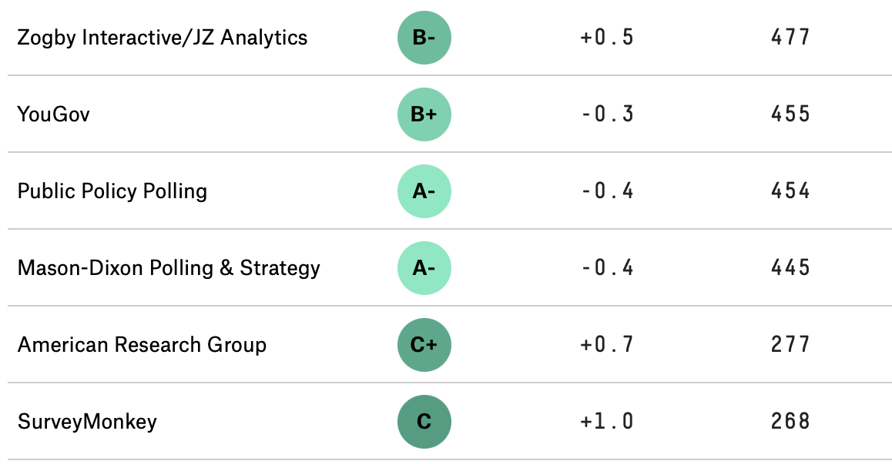
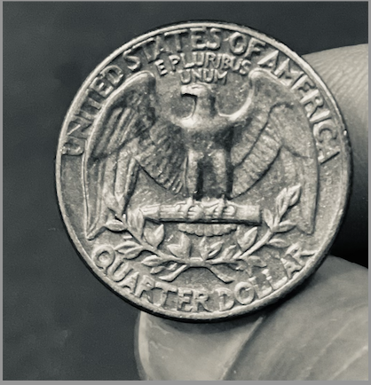
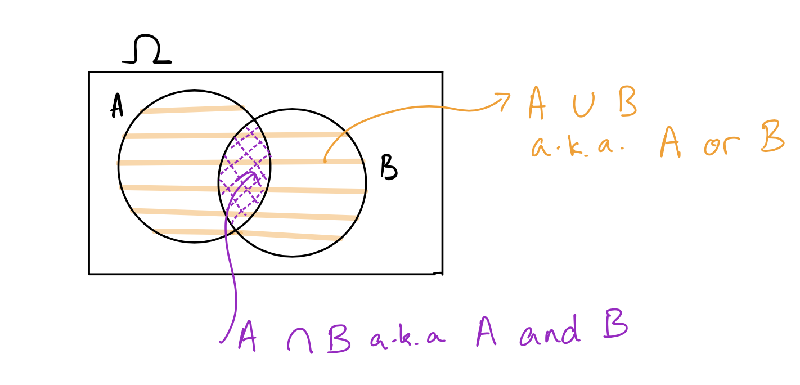
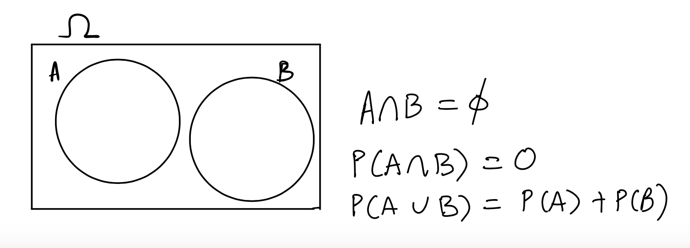
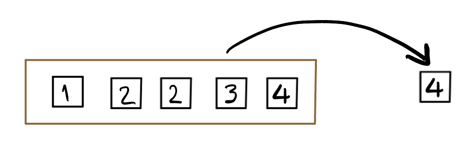
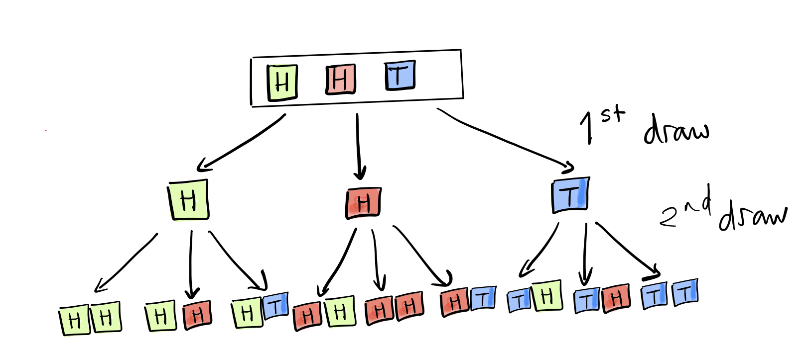

Number of simulations = 1000 prop_wins_game_1
1 0.514 prop_wins_game_2
1 0.487Definitions, axioms, and examples
In order to be taken seriously, we need to be careful about how we collect data, and then how we generalize our findings. For example, you may have observed that some polling companies are more successful than others in their estimates and predictions, and consequently people pay more attention to them. Below is a snapshot of rankings of polling organizations from the well-known website FiveThirtyEight1, and one can imagine that not many take heed of the polling done by the firms with C or worse grades. According to the website, the rankings are based on the polling organization’s ``historical accuracy and methodology”.

In order to make estimates as these polling organizations are doing, or understand the results of a clinical trial, or other such questions in which we generalize from our data sample to a larger group, we have to understand the variations in data introduced by randomness in our sampling methods. Each time we poll a different group of voters, for example, we will get a different estimate of the proportion of voters that will vote for Joe Biden in the next election. To understand variation, we first have to understand how probability was used to collect the data.
Since classical probability came out of gambling games played with dice and coins, we can begin our study by thinking about those.

In 17th century France, gamblers would bet on anything. In particular, they would bet on a fair six-sided die landing 6 at least once in four rolls. Antoine Gombaud, aka the Chevalier de Méré, was a gambler who also considered himself something of a mathematician. He computed the chance of a getting at least one six in four rolls as 2/3 \((4 \times (1/6) = 4/6)\). He won quite often by betting on this event, and was convinced his computation was correct. Was it?
The next popular dice game was betting on at least one double six in twenty-four rolls of a pair of dice. De Méré knew that there were 36 possible outcomes when rolling a pair of dice, and therefore the chance of a double six was 1/36. Using this he concluded that the chance of at least one double six in 24 rolls was the same as that of at least one six in four rolls, that is, 2/3 (\(24 \times 1/36\)). He happily bet on this event (at least one double six in 24 rolls) but to his shock, lost more often than he won! What was going on?
We will see later how to compute this probability, but for now we can estimate the value by simulating the game many times (1000 times each) and looking at the proportion of times we see at least one six in 4 rolls of a fair die, and do the same with at least one double six in 24 rolls.
Number of simulations = 1000 prop_wins_game_1
1 0.514 prop_wins_game_2
1 0.487You can see here that the poor Chevalier wasn‚Äôt as good a mathematician as he imagined himself to be, and didn‚Äôt compute the chances correctly. The simulated probabilities are nowhere close to 4/6 and 2/3, the probabilities that he computed for the first and second game, respectively. üßê
By the end of this unit, you’ll be able to conduct simulations like these yourself in R! For today, we are going to begin by introducing the conceptual building blocks behind probability.
First, let’s establish some terminology:
Let’s say that there are \(n\) possible outcomes in the outcome space \(\Omega\), and an event \(A\) has \(k\) possible outcomes out of those \(n\). If all the outcomes are equally likely to happen (as in a die roll or coin toss), then we say that the probability of \(A\) occuring is \(\displaystyle \frac{k}{n}\).
\[ P(A) = \frac{k}{n} \]

Suppose we toss a fair coin, and I ask you what is the chance of the coin landing heads. Like most people, you reply 50%. Why? Well… (you reply) there are two possible things that can happen, and if the coin is fair, then they are both equally likely, so the probability of heads is 1/2 or 50%.
Here, we have thought about an event (the coin landing heads), seen that there is one outcome in that event, and two outcomes in the outcome space, so we say the probability of the event, \(P(\text{Heads})\), is 1/2.
Consider rolling a fair six-sided die: six outcomes are possible so \(\Omega = \{1, 2, 3, 4, 5, 6\}\). Since the die is fair, each outcome is equally likely, with probability \(= \displaystyle \frac{1}{6}\). We can list the outcomes and their probabilities in a table.
| Outcome | \(1\) | \(2\) | \(3\) | \(4\) | \(5\) | \(6\) |
|---|---|---|---|---|---|---|
| Probability | \(\displaystyle \frac{1}{6}\) | \(\displaystyle \frac{1}{6}\) | \(\displaystyle \frac{1}{6}\) | \(\displaystyle \frac{1}{6}\) | \(\displaystyle \frac{1}{6}\) | \(\displaystyle \frac{1}{6}\) |
Let \(A\) be the event that an even number is rolled. Then the set \(A\) can be written \(\{2,4,6\}\). Since all of these outcomes are equally likely:
\[P(A) = \frac{1}{6} + \frac{1}{6} + \frac{1}{6} = \frac{3}{6}\]
In order to compute the probabilities of events, we need to set some basic mathematical rules called axioms (which are intuitively clear if you think of the probability of an event as the proportion of the outcomes that are in it). There are three basic rules that will help us compute probabilities:
Before we write the third rule, we need some more definitions and notation:
Now we consider events that don’t intersect or overlap at all, that is, they are disjoint from each other, or mutually exclusive:
If \(A\) and \(B\) are mutually exclusive, then we know that if one of them happens, the other one cannot. We denote this by writing \(A \cap B = \emptyset\) and read this as \(A\) intersect \(B\) is empty. Therefore, we have that
\[P(A \cap B) = P(\emptyset) = 0\].
For example, if we are playing De Méré’s second game, the event \(A\) that we roll a pair of sixes and the event \(B\) that we roll a pair of twos cannot happen on the same roll. These events \(A\) and \(B\) are mutually exclusive.
However, if we roll a die, the event \(C\) that we roll an even number and the event \(D\) that we roll a prime number are not mutually exclusive, since the number 2 is both even and prime.
Here’s another example that might interest soccer fans: The event that Manchester City wins the English Premier League (EPL) in 2024, and the event that Liverpool wins the EPL in 2024 are mutually exclusive, but the events that Manchester City are EPL champions in 2024 and Manchester City are EPL champions in 2023 are not mutually exclusive.
Now for the third axiom:
\[P(A \cup B) = P(A) + P(B)\] That is, for two mutually exclusive events, the probability that either of the two events might occur is the sum of their probabilities. This is called the addition rule.
For example, consider rolling a fair six-sided die, and the two events \(A\) and \(B\), where \(A\) is the event of rolling a multiple of \(5\), and \(B\) is the event that we roll a multiple of \(2\).
The only outcome in \(A\) is \(\{5\}\), while \(B\) consists of \(\{2, 4, 6\}\). \(P(A) = 1/6\), and \(P(B) = 3/6\). Since \(A \cap B =\emptyset\), that is, \(A\) and \(B\) have no outcomes in common, we have that
\[P(A \cup B) = P(A) + P(B) = \frac{1}{6} + \frac{3}{6} = \frac{4}{6}\]
The complement rule
Here is an important consequence of axiom 3. Let \(A\) be an event in \(\Omega\). The complement of \(A\), written as \(A^C\), consists of all those outcomes in \(\Omega\) that are not in \(A\). Then we have the following rule:
\[P(A) + P(A^C) = 1\]
This is because \(A \cup A^C = \Omega\), and \(A \cap A^C \emptyset\)).
Consider the penguins dataset, which has 344 observations, of which 152 are Adelie penguins and 68 are Chinstrap penguins. Suppose we pick a penguin at random, what is the probability that we would pick an Adelie penguin? What about a Gentoo penguin?
Let \(A\) be the event of picking an Adelie penguin, \(C\) be the event of picking a Chinstrap penguin, and \(G\) be the event of picking a Gentoo penguin.
Assuming that all the penguins are equally likely to be picked, we see that then \(P(A) = 152/344\), and \(P(C) = 68/344\).
Since only one penguin is picked, we see that \(A, C\), and \(G\) are mutually exclusive. This means that \(P(A)+P(C)+P(G) = 1\), since \(A, C\), and \(G\) together make up all of \(\Omega\).
Therefore the complement of \(G\), \(G^C\), which is a penguin that is not Gentoo, consists of Adelie and Chinstrop penguins, and by the addition rule,
\[P(G^C) = P(A \cup C) = P(A) + P(C) = (152+68)/344 = 220/344\]
Finally, the complement rule tells us that
\[P(G) = 1 - P(G^C) = 1 - 220/344 = 124/344\].We often represent events using Venn diagrams. The outcome space \(\Omega\) is usually represented as a rectangle, and events are represented as circles inside \(\Omega\). Here is a Venn diagram showing two events \(A\) and \(B\), their intersection, and their union:

Here is a Venn diagram showing two mutually exclusive events (no overlap):

Suppose we toss a coin twice and record the equally likely outcomes. What is \(\Omega\)? What is the chance of at least one head?
Solution: \(\Omega = \{HH, HT, TH, TT\}\), where \(H\) represents the coin landing heads, and \(T\) represents the coin landing tails. Note that since we can get exactly one head and one tail in two ways, we have to write out both ways so that all the outcomes are equally likely.
Now, let \(A\) be the event of getting at least one head in two tosses. We can do this by listing the outcomes in \(A\): \(A = \{HH, HT, TH\}\) and so \(P(A) = 3/4\).
Alternatively, we can consider \(A^C\) which is the event of no heads, so \(A^C = \{TT\}\) and \(P(A^C) = 1/4\).
In this case, \(P(A) = 1- P(A^C) = 1-1/4 = 3/4\).
Now you try: Let \(\Omega\) be the outcome space of tossing a coin three times. What is the probability of at least one head? What about exactly one head?
\(\Omega = \{HHH, HHT, HTH, THH, HTT, THT, TTH, TTT \}\).
Let \(A\) be the event of at least one head. Then \(A^C\) is the event of no heads, so \(A^C = \{TTT\}\), and \(P(A^C) = 1/8\). Therefore \(P(A) = 1-1/8 = 7/8\). Note that this is much quicker than listing and counting the outcomes in \(A\).
If \(B\) is the event of exactly one head, then \(B = \{HTT, THT, TTH\}\) and \(P(B) = 3/8\).

Consider the box above which has five almost identical tickets. The only difference is the value written on them. Imagine that we shake the box to mix the tickets up, and then draw one ticket without looking so that all the tickets are equally likely to be drawn3.
What is the chance of drawing an even number?
Solution:
Let \(A\) be the event of drawing an even number, then \(A = \{2, 2, 4\}\): we list 2 twice because there are two tickets marked 2, making it twice as likely as any other number. \(P(A) = 3/5\)
Suppose I have a coin that is twice as likely to land heads as it is to land tails. This means that I cannot represent \(\Omega\) as \(\{H, T\}\) since heads and tails are not equally likely. How should I write \(\Omega\) so that the outcomes are equally likely?
Solution:
In this case, we want to represent equally likely outcomes, and want \(H\) to be twice as likely as \(T\). We can therefore represent \(\Omega\) as \(\{H, H, T \}\). Now the chance of the coin landing \(H\) can be written as \(P(A)\) where \(A\) is the event the coin lands \(H\) is given by 2/3.
Suppose we toss the coin twice. How would we list the outcomes so that they are equally likely? Now we have to be careful, and think about all the things that can happen on the second toss if we have \(H\) on the first toss.
This is much easier to imagine if we imagine drawing twice from a box of tickets, but putting the first ticket back before drawing the second (to represent the fact that the probabilities of landing \(H\) or \(T\) stay the same on the second toss.)
Now, imagine the box of tickets that represents \(\Omega\) to be \(\fbox{H, H, T}\). We draw one ticket at first, which could be one of three tickets (there are two tickets that could be \(H\), and one \(T\)). We can represent it using the following picture:

From this picture, where we use color to distinguish the two different outcomes of heads and one outcome of tails, we can see that there are 9 possible outcomes that are equally likely, and we get the following probabilities (where \(HT\), for example, represents the event that the first toss is heads, followed by the second toss being tails.)
\(P(HH) = 4/9,\; P(HT) = P(TH) = 2/9, P(TT) = 1/9\) (Check that the probabilities sum to 1!)

An American roulette wheel has 38 pockets4, of which 18 are red, 18 black, and 2 are green. The wheel is spun, and a small ball is thrown on the wheel so that it is equally likely to land in any of the 38 pockets. Players bet on which colored or numbered pocket the ball will come to rest in. If you bet one dollar that the ball will land on red, and it does, you get your dollar back, and you win one more dollar, so your net gain is $1. If it doesn’t, and lands on a black or green number, you lose your dollar, and your net “gain” is -$1.
What is the chance that we will win one dollar on a single spin of the wheel?
Hint Write out the chance of the ball landing in a red pocket, and not landing in a red pocket.
sample() and replicate(), and learned another useful function seq()This website was begun as poll aggregation site, by the statistician Nate Silver.↩︎
The singular is die and the plural is dice. If we use the word “die” without any qualifiers, we will mean a fair, six-sided die.↩︎
We call the tickets equally likely when each ticket has the same chance of being drawn. That is, if there are \(n\) tickets in the box, each has a chance of \(1/n\) to be drawn. We also refer to this as drawing a ticket uniformly at random, because the chance of drawing the tickets are the same, or uniform.↩︎
Photo via unsplash.com↩︎